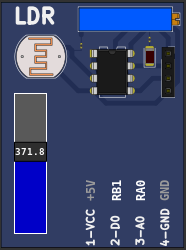
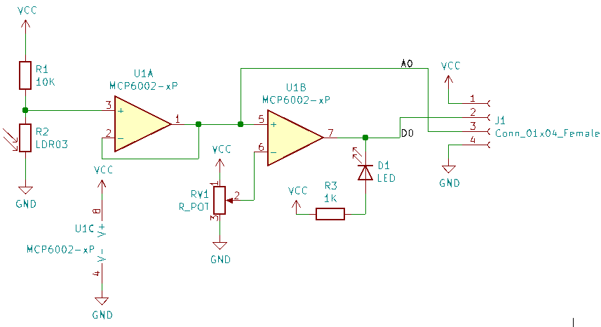

10.2.8 LDR
This part is light dependent resistor (LDR) connected in series with one 10K resistor. The analog output of the voltage divider is applied to one voltage follower and can be read directly from pin A0. The analog value from voltage follower is compared with one voltage threshold, the digital output of comparator and can be read directly from pin D0.
| LDR Characteristics | Value |
| Gamma value at 100-10Lux | 0.7 |
| Light Resistance at 10Lux (25°C) | 20K |

